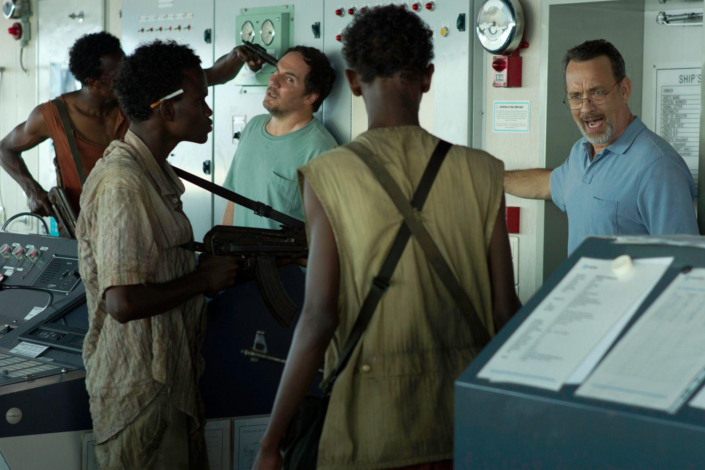
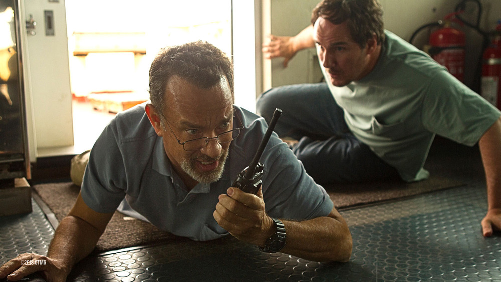

Sinopsis
Kapal Kargo MV Maersk Alabama sedang berlayar di lautan luas. Captain Richard Phillips (Tom Hanks) memimpin pelayaran dengan banyak kru. Saat berlayar itulah, dia melihat dari dalam radar ada benda yang sedang mendekat. Saat dilihat menggunakan teropong, benda itu adalah dua kapal bajak laut. Mereka semakin mendekat dan mulai menembak. Phillips sebenarnya sudah melakukan perlawanan. Namun kegesitan para bajak laut membuat mereka berhasil menaiki kapal dan mengambil alih. Keadaan berbalik dengan cepat. Para bajak laut menguasai kapal dan para kru kapal bersembunyi. Captain Phillips melakukan negosiasi kepada para bajak laut yang diketahui dari Somalia. Namun sepertinya tidak ada jalan damai. Sekarang tugas Captain Phillips dan para krunya untuk mencari jalan selamat dengan berbagai cara.

Resensi
Captain Phillips adalah film biografi drama thriller Amerika Serikat tahun 2013 yang disutradarai oleh Paul Greengrass dan diproduseri oleh Scott Rudin, Michael De Luca dan Dana Brunetti. Naskah film ini ditulis oleh Billy Ray berdasarkan buku A Captain's Duty karya Richard Phillips dan Stephan Talty. Film ini dibintangi oleh Tom Hanks dan Barkhad Abdi. Film Captain Phillips ditayangkan secara perdana di Festival Film New York pada tanggal 27 September 2013 dan dirilis di Amerika Serikat pada tanggal 11 Oktober 2013.Film ini mendapatkan review positif dari para kritikus.
Film Captain Phillips mendapatkan $107.100.855 di Amerika Utara dan $111.690.956 di negara lain. Total pendapatan yang dihasilkan oleh film ini mencapai $218.791.811, melebihi anggaran produksi film $55 juta. Pada pembukaan akhir pekan, film ini mendapatkan $25.718.314, menempati posisi kedua di box office di belakang film Gravity.

Berikut trailer clip dari film Captain Philips. Selamat menonton!